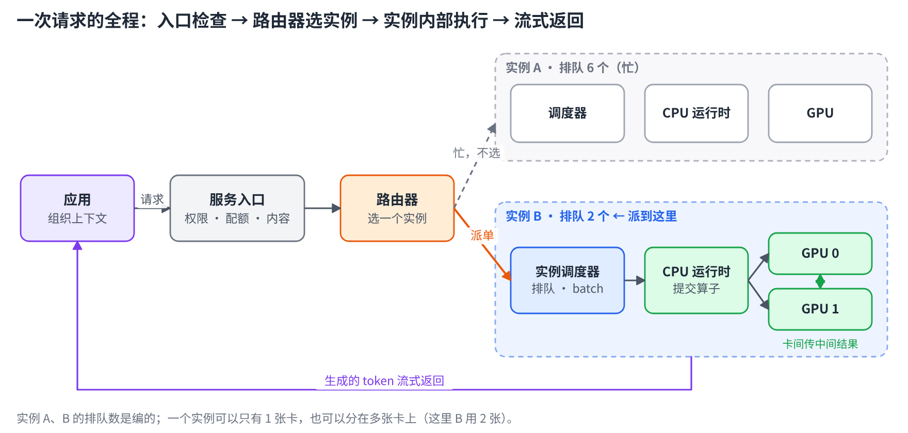
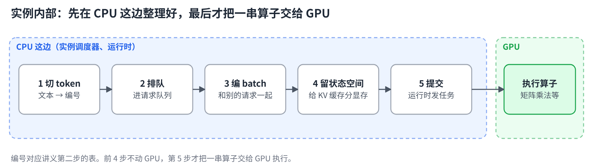
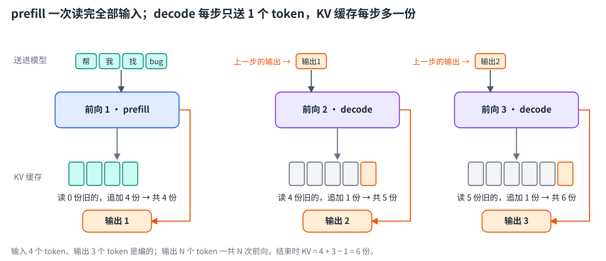
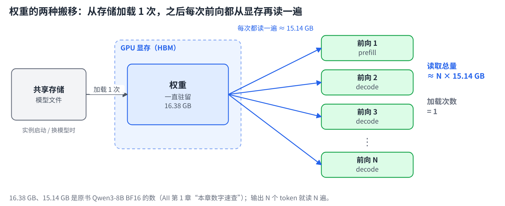
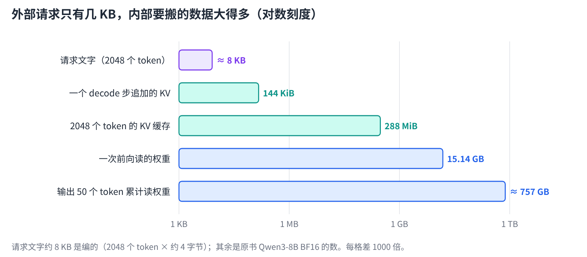
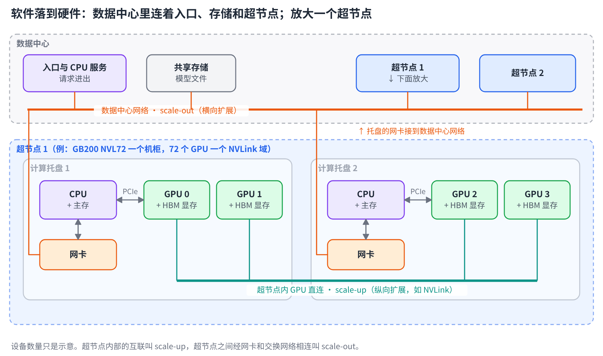

第 02 章 · 一次生成请求的处理过程：权重加载一次，每个 token 都要再读一遍
本地运行
git clone https://github.com/wikieden/ai-infra-from-constraints
cd ai-infra-from-constraints/code/notebooks
pip install jupyterlab torch numpy
jupyter lab ch02_request_lifecycle.ipynb也可以下载后直接用 VS Code 打开 .ipynb 运行。需要 GPU 的章节在 Colab 里选「代码执行程序 → 更改运行时类型 → GPU」。
本章回答：一个请求进了模型服务以后，先被交给谁、在实例里经过哪几步？prefill 和 decode 有什么不同？为什么请求只有几 KB，系统内部却要搬几百 GB？这些软件步骤分别落在哪块硬件上？
讲解日期：2026-11-24 · 上一章：第 01 章 一次请求走过的六层 · 下一章：第 03 章 从存储程序到数据流执行（待写）
对应原文：materials/ai-infra-book/manuscripts/01-初识 AI Infra.md§1.1.3 L55–L95（图 1-3ch01/figure-1-2-request.svg、图 1-4ch01/figure-1-weight-lifetime.svg、图 1-5ch01/figure-1-3-datacenter.svg）；Qwen3-8B 的数字取自同一文件"本章数字速查" L456–L468
本章缩写：BF16 = Brain Float 16（Google Brain 提出的 / 浮点 / 16 位）· CED = Causal Encoder-Decoder（因果 / 编码器 / 解码器）· CPU = Central Processing Unit（中央 / 处理 / 单元）· DMA = Direct Memory Access（直接 / 内存 / 访问）· GPU = Graphics Processing Unit（图形 / 处理 / 单元）· HBM = High Bandwidth Memory（高 / 带宽 / 内存）· KV = Key-Value（键 / 值）· NIC = Network Interface Card（网络 / 接口 / 卡，即网卡）· NVL72 = NVLink 72（72 个 GPU 用 NVLink 连成一个域）· NVLink = NVIDIA Link（NVIDIA 的卡间直连）· PCIe = Peripheral Component Interconnect Express（外设 / 部件 / 互联 / 高速版）· TP = Tensor Parallelism（张量 / 并行）。AII、AISPE 是本专题两本书的简称。全部缩写见 缩写与术语表
第 01 章从上往下看了六层。本章换个方向：跟着一个具体请求走一遍，看它在每一层实际发生了什么，最后落到哪块硬件上。

图 2-1 · 一次请求的全程。左边是软件的分工（谁负责），右边是实例内部的执行；第一步到第四步按这张图的顺序讲。
讲解
第一步：谁来接这个请求：推理实例和路由器（2026-11-24）
类比：连锁餐厅的总台。 外卖单先到总台，总台看哪家分店会做这道菜、哪家现在不忙，把单子派过去。到了分店，由分店的厨师长决定先炒哪几单、用几口灶。
| 原文的词 | 是什么 | 餐厅里对应 |
|---|---|---|
| 推理实例（inference instance） | 能独立完成一个模型请求的一组执行资源，可以是 1 张卡，也可以是多张卡 | 一家分店（可能只有一口灶，也可能有好几口） |
| 服务入口 | 核验访问权限、检查配额和请求内容 | 总台先看你是不是会员、今天还能不能下单 |
| 服务路由器（router） | 按目标模型、各实例的负载，选一个实例 | 总台派单给哪家分店 |
| 实例调度器（scheduler） | 实例内部安排加速器怎么执行 | 分店的厨师长 |
原文 L57 说了为什么先分清这一层："先分清谁负责执行，才能知道一份权重应放在哪里、一份中间结果应传给谁。"一个实例要有一份完整的模型权重（第四步细讲）；实例分在几张卡上，卡之间就要传中间结果。
例子：两个实例 A、B 都跑同一个模型。A 手上有 6 个请求，B 有 2 个。新请求来了，按"谁更闲"的规则，路由器把它派给 B。（数字是编的，真实路由还会看前缀缓存命中、请求长度等，第 9 章讲。）
一句话：入口先检查请求，路由器选一个实例，实例内部的调度器再安排卡怎么执行。两级分工：路由器管"去哪家"，调度器管"怎么做"。
第二步：实例里面：切 token、排队、凑 batch、提交给 GPU（2026-11-24）
类比：分店后厨。 单子先翻成后厨的格式（把菜名换成配料编号），挂到出单口排队；厨师长看看哪几单可以一锅炒（凑 batch），给每单留好盛菜的盘子（分配状态空间）；最后把指令交给灶台上的人（GPU）去炒。
原文 L65 的顺序，拆成 5 步：

图 2-2 · 实例内部的处理顺序。前四步主要在 CPU 上做，最后一步才轮到 GPU 算。
| # | 做什么 | 谁做 |
|---|---|---|
| 1 | 文本切成 token 序列（token 是模型处理文本的基本单位，可能是一个字、半个词或其他片段） | 实例或共享前端 |
| 2 | 请求放进队列 | 实例调度器 |
| 3 | 和别的请求一起编进 batch | 实例调度器 |
| 4 | 给这个请求的状态（第三步的 KV 缓存）分配显存空间 | 实例调度器 |
| 5 | CPU 上的运行时把计算任务提交给 GPU，GPU 执行相应的算子（矩阵乘法这类基本运算） | CPU 运行时 → GPU |
这 5 步各属于第 01 章六层里的哪一层，留到练习题 1 自己判断。
场景代码：第 1 步"切 token"实际长这样。用 Hugging Face 的分词器，同一句话切出来几个 token 由分词结果决定，不等于字数：
from transformers import AutoTokenizer
tok = AutoTokenizer.from_pretrained("Qwen/Qwen3-8B") # 只下载分词器，几 MB
ids = tok("帮我找代码里的 bug")["input_ids"] # 第 1 步：文本 → token 编号
print(len(ids), ids) # token 数由分词器决定，不等于字数
print([tok.decode([i]) for i in ids]) # 每个 token 对应哪段文字
一句话：进了实例以后，请求先在 CPU 这边被切成 token、排队、凑 batch、留好状态空间，最后才作为一串算子交给 GPU 算。
第三步：prefill 和 decode：先把题读完，再一个字一个字写（2026-11-24）
类比：考试写作文。 先把题目和材料一口气读完（prefill），然后一个字一个字往下写（decode），每写一个字都要回头看看前面写了什么。第 01 章的"便签"就是读题和写作时随手记下的要点（KV 缓存）。
原文 L67：
- 预填充（prefill）：模型先处理输入。所有输入 token 在一次前向计算里一起处理，同时为每个输入 token 存下 k、v，并得到第一个输出 token。
- 解码（decode）：随后每一步只送进一个新 token（上一步的输出），读已有的整份 KV 缓存，追加这个 token 的 k、v，得到下一个 token。"前一步输出成为下一步输入"。
- 生成的 token 转成文本，沿连接流式返回（一边生成一边发）。如果输出要求调用工具，应用去运行工具，把结果加进上下文，再发起后续调用。

图 2-3 · 时间从左往右。prefill 一次吃下 4 个输入 token；之后每个 decode 步只送进 1 个 token，KV 缓存每步多一格。
例子（数字是编的，方便手算）：输入"帮我找 bug"算 4 个 token，要输出 3 个 token。
| 第几次前向 | 阶段 | 送进模型的 token | 读多少份旧 KV | 结束时 KV 有几份 | 输出 |
|---|---|---|---|---|---|
| 1 | prefill | 4 个输入 token | 0 | 4 | 第 1 个输出 token |
| 2 | decode | 第 1 个输出 token | 4 | 5 | 第 2 个 |
| 3 | decode | 第 2 个输出 token | 5 | 6 | 第 3 个 |
两个规律：
- 输出 \(N\) 个 token，一共要 \(N\) 次前向：1 次 prefill + \((N-1)\) 次 decode。
- 最后一个输出 token 不用再送进模型，所以结束时 KV 份数 = 输入长度 + \((N-1)\)。这里是 \(4 + 2 = 6\)。
场景代码：用 Hugging Face 手写生成循环，能看清 prefill 和 decode 的分界（model.generate() 内部就是这样做的）：
import torch
from transformers import AutoModelForCausalLM, AutoTokenizer
tok = AutoTokenizer.from_pretrained("Qwen/Qwen3-8B")
model = AutoModelForCausalLM.from_pretrained("Qwen/Qwen3-8B", dtype=torch.bfloat16, device_map="cuda") # 旧版本参数名叫 torch_dtype
ids = tok("帮我找代码里的 bug", return_tensors="pt").input_ids.to("cuda")
out = model(input_ids=ids, use_cache=True) # prefill：全部输入 token 一次前向
past = out.past_key_values # 存下来的 KV 缓存
nxt = out.logits[:, -1].argmax(-1, keepdim=True) # 第 1 个输出 token（贪心选最大）
for _ in range(2): # decode：每步只送 1 个 token
out = model(input_ids=nxt, past_key_values=past, use_cache=True)
past = out.past_key_values # KV 缓存多了一份
nxt = out.logits[:, -1].argmax(-1, keepdim=True)
补基础：为什么旧 token 的 k、v 算一次就不会再变，见《从零读懂 Transformer》第 17 章 因果 mask；q、k、v 是什么，见第 9 章。
一句话：prefill 一次读完全部输入、存下 KV、出第一个 token；decode 每步只送一个 token、读整份 KV、追加一份、出下一个 token。
第四步：权重的两种搬移：加载一次，每步再读一遍（2026-11-24）
类比：菜谱。 分店开张时，把菜谱从总部仓库搬来一次，放在厨房书架上（驻留）。之后每炒一锅，厨师都要把整本菜谱从书架翻一遍。搬一次和翻很多次，是两种频率完全不同的搬移。
原文 L69：
| 搬移 | 从哪到哪 | 多久一次 |
|---|---|---|
| 加载 | 存储 → 显存 | 实例启动或换模型时，一次 |
| 执行时读取 | 显存 → GPU 计算单元 | 每次前向都读：当前层的权重和上下文状态读进来，算完交给下一层 |
| 卡间传递（多卡实例才有） | 一张卡 → 另一张卡 | 每层算完的中间结果，要传过去后面才能继续 |
中间张量是运算产生、交给后续运算的多维数组（矩阵就是二维张量）。卡间怎么切、要传什么，见补充 · TP、PP、CP。

图 2-4 · 蓝框是显存里一直放着的同一份权重；它只从存储加载一次，但每次前向（prefill 和每个 decode 步）都要读一遍。
公式：
- \(N\)：输出 token 数，也就是前向次数（第三步）。
- \(W_{\text{step}}\)：一次前向要读的主要权重字节数，W = weight（权重），step = 一步。
例子：原书用的 Qwen3-8B，BF16 精度（每个参数 2 字节），原文"本章数字速查"给出：
| 原书的数 | 值 |
|---|---|
| 完整 BF16 权重（加载进显存的量） | 16.38 GB |
| 一步 decode 的主要权重读取 \(W_{\text{step}}\) | 15.14 GB（嵌入层只读当前 token 那一行，所以比 16.38 小） |
| 每个上下文 token 的 KV | 144 KiB |
| 2048 个 token 上下文的 KV | 288 MiB |
一个请求带 2048 个 token 的上下文（贴了一段代码），要输出 50 个 token：
- 权重从存储加载 1 次：16.38 GB，而且实例启动时就加载好了，不算在这个请求头上。
- 权重从显存读 50 次：约 \(50 \times 15.14 \approx 757\) GB。
- prefill 结束时 KV 是 2048 × 144 KiB = 288 MiB，之后每个 decode 步追加 144 KiB。
- 请求本身的文字：2048 个 token 按每个约 4 字节算（编的），大约 8 KB。

图 2-5 · 纵轴是对数刻度，每格差 1000 倍。请求文字约 8 KB，50 个 token 读权重的总量约 757 GB，差了大约一亿倍。
这就是原文 L69 加粗的那句话：外部请求可能只有一小段文字，内部搬移的数据却包括大得多的权重、状态和中间张量。算这些读取要花多少时间，是第 05 章的事。
场景代码：用 vLLM 起一个实例，tensor_parallel_size=2 就是"一个实例分在 2 张卡上"，每张卡放一半权重，卡之间每层都要传中间结果：
from vllm import LLM, SamplingParams
llm = LLM(model="Qwen/Qwen3-8B", dtype="bfloat16", tensor_parallel_size=2) # 启动时加载权重一次
params = SamplingParams(max_tokens=50) # 最多输出 50 个 token
outs = llm.generate(["帮我找代码里的 bug：..."], params) # 每个 token 都要读一遍权重
print(outs[0].outputs[0].text)
一句话：权重加载一次、一直驻留在显存里；但每次前向都要从显存再读一遍，输出 \(N\) 个 token 就读 \(N\) 遍。
第五步：软件落到硬件：托盘、超节点、数据中心（2026-11-24）
类比：一座城市的物流。 一个仓库里（计算托盘），工人（GPU）手边有货架（显存）；同一个园区的仓库之间有内部传送带（超节点内互联，又快又近）；园区和园区之间走城市公路（数据中心网络，范围大、开销也大）。

图 2-6 · 上层是数据中心，下层放大一个超节点。实线是数据路径，设备数量只是示意。
原文 L77–L81，从小到大：
| 范围 | 里面有什么 | 管什么 |
|---|---|---|
| 计算托盘（机柜里可插拔的单元）/ 服务器 | CPU + 主存；GPU + 各自的显存（常用 HBM，通过宽接口持续供数据）；网卡 | CPU 跑主机程序、控制执行；GPU 算模型、存运行时数据 |
| 托盘内的连接 | CPU ↔ GPU 走 PCIe；GPU ↔ GPU 可以走独立高速互联直接交换 | 支持 DMA 的系统里，数据可以由传输硬件直接写进指定内存，CPU 只负责发起和管理（第 7 章讲） |
| 超节点 | 一组靠高带宽互联紧密协作的加速器，可以跨多个托盘 | 超节点内部的互联叫 scale-up（纵向扩展）：让一组卡以低通信开销一起算 |
| 数据中心 | 入口与 CPU 服务、共享存储、多个超节点组成的加速器资源池 | 超节点之间经网卡和交换网络相连，叫 scale-out（横向扩展）：扩大集群范围 |
例子：原文举的 NVIDIA GB200 NVL72，一个机柜里放 36 个 Grace CPU 和 72 个 Blackwell GPU，72 个 GPU 通过 NVLink 连成同一个互联域。这样紧密协作的范围从一台机器扩大到了一整个机柜：模型的权重和状态可以分到更多卡上，频繁的交接都在机柜内完成；集群网络只负责对外连接。
原文 L83 还把三种流量分开比较：
| 流量 | 走哪条路 | 多久一次 | 能不能等 |
|---|---|---|---|
| 请求（用户的文字、返回的 token） | 服务入口 | 每个请求进出一次，流式返回时一次一小段 | 用户在等，但量小 |
| 模型文件 | 共享存储 → 显存 | 启动或换模型时一次 | 可以提前加载 |
| 计算中的中间结果 | 加速器互联（scale-up 为主） | 每层都有 | 必须及时到达，下一层才能继续 |
所以物理连接会直接影响模型的执行时间。
一句话：一个托盘里是 CPU + 主存、GPU + HBM；超节点内部靠 scale-up 互联紧密协作，超节点之间靠 scale-out 网络扩大范围。三种流量里，只有中间结果是"每层都要、等不起"的。
第六步：贯穿全书的两组模型（2026-11-24）
原文 L91–L95 先交代了后面各章反复用到的两组模型，这里只记住它们各自用来干什么：
| 模型 | 书里用来做什么 | 本章要记的一点 |
|---|---|---|
| Qwen3-8B（开源） | 基础算例，建立计算方法 | 第四步的 16.38 GB、15.14 GB、144 KiB 都是它 |
| DeepSeek V4 / V4.1 Flash | 检验模型和系统怎么一起变 | V4 用上下文压缩和稀疏访问改变存储和读取需求；V4.1 Flash 用 CED（因果编码器—解码器）重新分工 |
CED 改了什么（类比：秘书先把一大摞材料整理成摘要，写回复的人只看摘要）：传统的 decoder-only（仅解码器）模型让每个输入 token 都走完整个主干；CED 让编码器先把上下文整理成表示，解码器从这些表示里取全局信息。大量输入 token 不用经过解码器主体，但生成新 token 时仍然依次经过编码器和解码器。输入和输出的路径不对称，正好对应 Agent 这类"输入多、输出少"的负载。第 2 章（原书）讲 CED 的结构。
一句话：Qwen3-8B 用来学怎么算，DeepSeek V4 / V4.1 用来看模型改了结构以后，系统要存什么、传什么怎么跟着变，这正是第 01 章说的跨层影响。
动画演示：一次请求从路由到流式返回，权重加载 1 次、读 N 次

可交互版：animations/02-request-lifecycle.html（滑块：输出多少个 token，看前向次数、权重读取次数和 KV 份数怎么变；输入固定 4 个 token）。
怎么看：
- 请求先到入口，路由器在两个实例里选更闲的那个（第一步）；
- 实例里切 token、排队、编 batch、留 KV 空间，CPU 提交给 GPU（第二步）；
- 权重从存储加载进显存，计数"加载 1 次"之后再也不变（第四步）；
- prefill：4 个输入 token 一起进，KV 一下子有 4 份，出第 1 个 token（第三步）；
- 每个 decode 步：权重读一遍、整份 KV 读一遍、KV 多一份、流式送出一个 token；"读权重"计数一直涨（第三、四步）。
练习与作答记录
题 1（第一、二步）：下面 5 件事打乱了顺序。（a）按一个请求实际经过的先后排好；（b）每件事各属于第 01 章六层里的哪一层？
- A. GPU 执行矩阵乘法算子
- B. 路由器发现实例 A 很忙，把请求派给实例 B
- C. 入口检查这个用户今天的配额还剩多少
- D. 实例调度器把这个请求和另外 7 个请求编进同一个 batch
- E. CPU 上的运行时把一串计算任务提交给 GPU
作答记录：（待作答）
题 2（第三、四步）：还是 Qwen3-8B、BF16，一个请求输入 1000 个 token，输出 300 个 token。
（a）一共要几次前向？其中几次 prefill、几次 decode？ （b）权重从存储加载几次？从显存读几次？读的总量大约多少 GB？ （c）prefill 刚结束时，这个请求的 KV 缓存多大？请求全部结束时呢？
作答记录：（待作答）
题 3（第五步）：（a）把一个实例复制成两个实例（每个实例各自完整一份），显存里的权重总量怎么变？路由器多了什么事可做？（b）下面三样数据，各走第五步表里的哪条路？哪个可以提前准备，哪个必须及时到达？① 一个用户新发来的提问；② 换成另一个模型时的模型文件；③ 一个实例分在 4 张卡上，第 10 层算完的部分结果。
作答记录：（待作答）
原书还有一道延伸题（练习 1-1，原文 L87–L89）：沿图 1-3 到 1-5 补画 KV 状态的增长，并标出四种数据搬移。想多练可以做，作答也记在这里。
口诀
路由选店，调度排单；
读题一口气，写字一个个；
菜谱搬一次，每锅翻一遍；
柜内 scale-up，柜外 scale-out。
本章复习卡片
I03（prefill 和 decode）、I04（权重的两种搬移）、I05（Qwen3-8B 三个数）、I06（scale-up 和 scale-out）。练习做完后，按答错、卡住的地方再补。
附录 · 延伸阅读
留给以后深入学习用，不影响本章主线。★ 是建议先读的。
推荐阅读
| 读什么 | 读哪里 | 读它为了什么 |
|---|---|---|
| ★ AII 第 1 章 | §1.1.3 L55–L95，图 1-3 到 1-5 | 本章的原文，三张图比文字更直观 |
| ★ AII 第 1 章"本章数字速查" | L456–L468 | Qwen3-8B 的权重、KV、每步读取量，后面各章反复用 |
| AII 第 1 章脚注 | L494（[^request]）、L496（[^datacenter]） |
调度与状态管理的分工可以对照 vLLM Scheduler 文档；GB200 NVL72 的官方硬件和网络指南 |
| AISPE 第 15–18 章 | 中英对照 materials/ai-systems-performance-engineering/docs/chapters/ |
多节点推理、prefill / decode 分离的工程写法（第 8、9 章讲到时再精读） |
| 补充 · TP、PP、CP | 全文 | 一个实例分在多张卡上时，卡之间到底传什么 |
数学原理
- 计数：输出 \(N\) 个 token 要 \(N\) 次前向（1 次 prefill + \(N-1\) 次 decode）；结束时 KV 份数 = 输入长度 + \(N - 1\)，因为最后一个输出不用再送进模型。
- 字节单位：GB = \(10^9\) 字节，KiB = \(2^{10}\) = 1024 字节，MiB = \(2^{20}\) 字节。原书权重用 GB，KV 用 KiB / MiB，混算时要先换成同一种单位。
- 对数刻度：图 2-5 每往上一格乘 1000；8 KB 和 757 GB 相差约 \(10^8\) 倍。
公式清单
| 公式 | 意思 |
|---|---|
| 前向次数 \(= N = 1 + (N-1)\) | 输出 \(N\) 个 token：1 次 prefill + \(N-1\) 次 decode |
| KV 份数（结束时）\(= L_{\text{in}} + N - 1\) | \(L_{\text{in}}\)：输入长度（in = input） |
| KV 字节 \(= \text{份数} \times 144\ \text{KiB}\) | Qwen3-8B、BF16 |
| 权重读取总量 \(\approx N \times W_{\text{step}}\) | \(W_{\text{step}} \approx 15.14\) GB（Qwen3-8B、BF16） |
| 权重加载次数 \(= 1\) | 实例启动或换模型时 |
代码对照：把本章的数字用代码算一遍
纯 Python，不需要 GPU，也不下载模型。代码在仓库本地
ai-infra/solutions/chapter-code/ch02_request_lifecycle.py，配套测试tests/test_ch02.py：
bash cd ai-infra/solutions/chapter-code uv run python ch02_request_lifecycle.py # 一步一步打印 uv run pytest tests/test_ch02.py
讲义 ↔ 代码：
| 讲义 | 公式 | 写法 | 跑出来 |
|---|---|---|---|
| 第一步 路由选更闲的实例 | 选排队最少的 | route(loads) |
{"A": 6, "B": 2} → B |
| 第三步 4 个输入、3 个输出 | \(N\) 次前向，KV \(= L_{\text{in}} + N - 1\) | simulate(4, 3) |
3 次前向，KV 4 → 5 → 6 |
| 第四步 Qwen3-8B 2048 输入、50 输出 | \(N \times W_{\text{step}}\) | weight_read_gb(50) |
约 757 GB |
| 第四步 2048 个 token 的 KV | 份数 × 144 KiB | kv_mib(2048) |
288 MiB |
| 第四步 请求文字和读权重差多少倍 | 757 GB ÷ 8 KB | ratio() |
约 \(9.5 \times 10^7\) 倍 |
关键几行：
def simulate(prompt_len, out_len):
kv, steps = 0, []
for i in range(out_len): # 输出 N 个 token = N 次前向
fed = prompt_len if i == 0 else 1 # prefill 送进全部输入，decode 只送 1 个
read_old = kv # 先读已有的整份 KV
kv += fed # 再追加这次送进来的 token 的 k、v
steps.append(("prefill" if i == 0 else "decode", fed, read_old, kv))
return steps
代码里才看得到的 3 件事：
- 循环跑 \(N\) 次，但 KV 只追加到 \(L_{\text{in}} + N - 1\)：最后一个输出 token 没被送进模型，它的 k、v 从没算过。要接着对话时，它会在下一次请求里补算。
- 权重加载量（16.38 GB）和每步读取量（15.14 GB）不是同一个数，两个常量要分开写，混用会多算约 8%。
- 原书的 GB 是 \(10^9\) 字节，KV 的 KiB / MiB 是 \(2^{10}\) / \(2^{20}\)；
ratio()里先把 8 KB 换成字节再除。
自己改一改（不影响练习答案）：
- 把
simulate(4, 3)的输入长度改成 1、改成 10，看 decode 步读的旧 KV 份数怎么变。 - 把
route的负载改成两个实例一样忙，看它怎么挑（提示：Python 的min遇到并列取第一个）。 - 把
weight_read_gb的输出 token 数从 50 改成 5，看读取总量怎么变，再想想"加载 1 次"变不变。